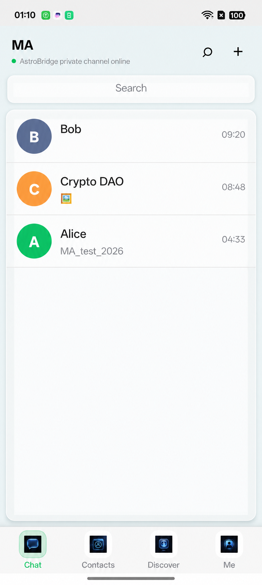

Your everyday chat日常聊天
Text, photos, voice messages and expressive cards, all in the conversation.
文字、图片、语音消息和生动卡片，都在熟悉的聊天里。
A message to Mom. A call with a friend. A moment worth sharing. MA brings conversations, voice and video calls, and community into one familiar place.
给妈妈一条消息，和朋友通一次电话，分享一个值得记住的瞬间。MA 将聊天、语音视频和社区融入日常，让重要的人更近一些。

From a quick hello to a longer conversation, keep the people who matter part of your day.
从一句问候到一次长谈，让你在乎的人留在日常里。
Text, photos, voice messages and expressive cards, all in the conversation.
文字、图片、语音消息和生动卡片，都在熟悉的聊天里。
Voice and video calls bring familiar voices and faces into the moment.
用语音和视频通话，把熟悉的声音和面孔带到此刻。
Keep a family group close, gather friends, or join a project community.
家人常联系，朋友聚在一起，也可以加入共同关注的项目群。
Share with friends in Moments. Explore the MA Square beta, where available.
在朋友圈分享近况，也可以体验已开放范围内的 MA 广场测试版。
Choose your language, adjust text size and personalize your space.
选择语言，调整字号，把个人空间布置成喜欢的样子。
Create a local chat identity without opening or funding a wallet.
无需创建钱包或存入资产，就能建立本机聊天身份。

Distance changes where we live, not who we care about. MA is built around the simple things that keep mothers, families and friends connected: a hello, a familiar voice, a face on the screen.
距离改变了住在哪里，却改变不了牵挂谁。MA 关心那些让妈妈、家人和朋友保持联络的小事：一句问候、熟悉的声音、屏幕里的一张笑脸。
Chat history is stored locally. Online delivery, account services and notifications use service infrastructure; see our privacy policy for details.
聊天记录保存在本地。在线投递、账号服务和通知会使用服务基础设施；具体处理方式见隐私政策。
A chat account connects you to people. Wallet tools, where enabled, are separate and do not give MA custody of your funds.
聊天账号用于人与人的联络。钱包工具在开放范围内独立提供，MA 不因此托管你的资金。
Access report and block controls from chat profiles. Review the community rules and official support information whenever you need them.
可从聊天资料进入举报和屏蔽，随时查看社区规则与官方客服信息。
Choose MA for everyday connection, or MA full for the same experience with additional reading tools.
日常联络选 MA；希望同时使用阅读工具，可以选择 MA 全能版。
Messaging, voice and video calls, groups and local-first conversations.
聊天、语音视频通话、群聊，以及本地优先的聊天体验。
The MA communication experience, plus Bible and hymn reading tools.
在 MA 联络体验之外，增加圣经与赞美诗阅读工具。
Availability depends on your country, device and store listing. Google Play shows the version available to you.
能否下载取决于所在地区、设备和商店页面，请以 Google Play 实际显示为准。
The iOS editions have been submitted to Apple. App Store availability will be announced here once confirmed.
iOS 两个版本已提交苹果审核，确认正式开放下载后，会在此更新入口。
These pages explain future proposals. Card redemption is not active; program plans are not live services or guaranteed benefits.
以下页面介绍未来计划。卡片兑换尚未开放；计划不代表服务已经上线，也不构成权益或收益保证。
Explore the card collection and the proposed redemption program.
了解卡片收藏和拟议中的兑换计划。
Read the plan了解计划Our proposed care initiative, with dignity and public accountability at its heart.
以尊严与公开监督为核心的关爱倡议。
Read the plan了解计划Read the proposed burn policy and its transaction-evidence requirements.
查看拟议销毁政策及其链上交易凭证要求。
Read the plan了解计划Understand the proposal, its conditions and the difference between plans and results.
了解方案、适用条件，以及计划与实际执行的区别。
Read the plan了解计划